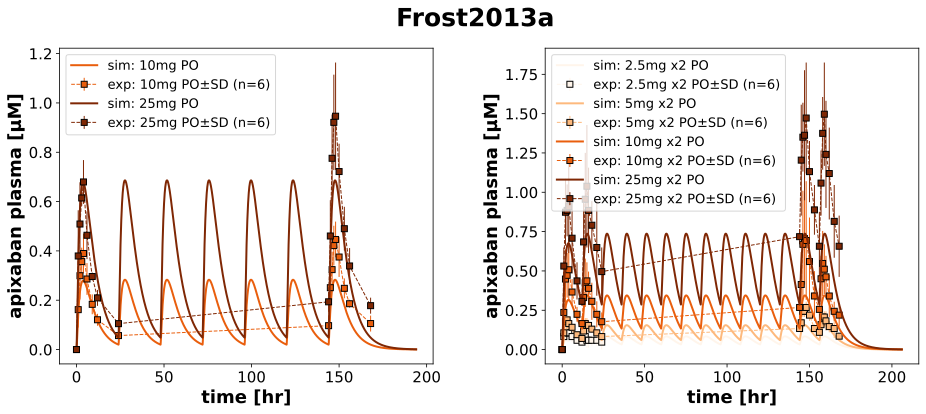
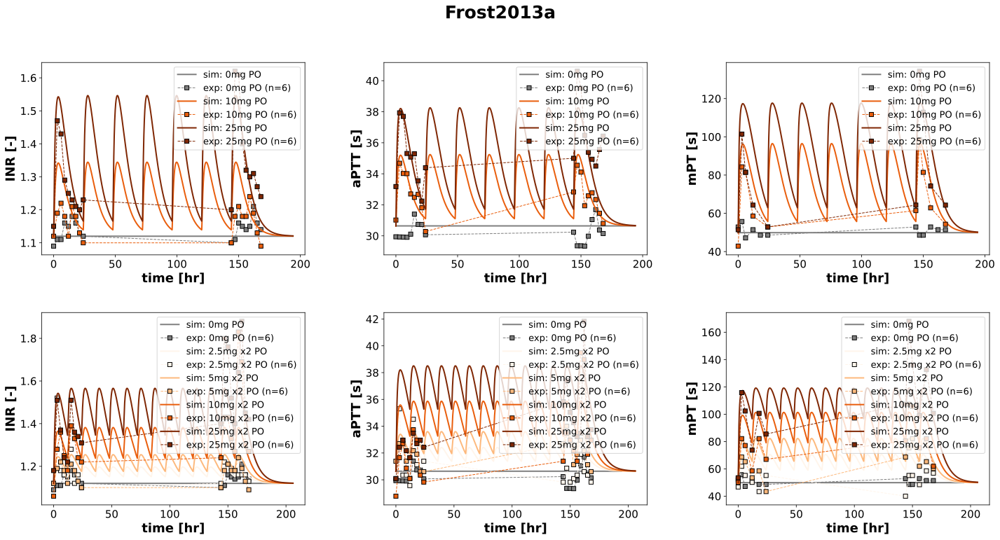

Frost2013a
Models
Datasets
- apixaban_API10: Frost2013a_apixaban_API10.tsv
- apixaban_API10x2: Frost2013a_apixaban_API10x2.tsv
- apixaban_API2.5: Frost2013a_apixaban_API2.5.tsv
- apixaban_API25: Frost2013a_apixaban_API25.tsv
- apixaban_API25x2: Frost2013a_apixaban_API25x2.tsv
- apixaban_API2x2: Frost2013a_apixaban_API2x2.tsv
- apixaban_API5x2: Frost2013a_apixaban_API5x2.tsv
- INR_API10: Frost2013a_INR_API10.tsv
- INR_API10x2: Frost2013a_INR_API10x2.tsv
- INR_API25: Frost2013a_INR_API25.tsv
- INR_API25x2: Frost2013a_INR_API25x2.tsv
- INR_API2x2: Frost2013a_INR_API2x2.tsv
- INR_API5x2: Frost2013a_INR_API5x2.tsv
- INR_placebo: Frost2013a_INR_placebo.tsv
- aPTT_API10: Frost2013a_aPTT_API10.tsv
- aPTT_API10x2: Frost2013a_aPTT_API10x2.tsv
- aPTT_API25: Frost2013a_aPTT_API25.tsv
- aPTT_API25x2: Frost2013a_aPTT_API25x2.tsv
- aPTT_API2x2: Frost2013a_aPTT_API2x2.tsv
- aPTT_API5x2: Frost2013a_aPTT_API5x2.tsv
- aPTT_placebo: Frost2013a_aPTT_placebo.tsv
- mPT_API10: Frost2013a_mPT_API10.tsv
- mPT_API10x2: Frost2013a_mPT_API10x2.tsv
- mPT_API25: Frost2013a_mPT_API25.tsv
- mPT_API25x2: Frost2013a_mPT_API25x2.tsv
- mPT_API2x2: Frost2013a_mPT_API2x2.tsv
- mPT_API5x2: Frost2013a_mPT_API5x2.tsv
- mPT_placebo: Frost2013a_mPT_placebo.tsv
- apixaban_aptt: Frost2013a_apixaban_aptt.tsv
- apixaban_inr: Frost2013a_apixaban_inr.tsv
- apixaban_mpt: Frost2013a_apixaban_mpt.tsv
- apixaban_aPTT_mean_API10: Frost2013a_apixaban_aPTT_mean_API10.tsv
- apixaban_aPTT_mean_API10x2: Frost2013a_apixaban_aPTT_mean_API10x2.tsv
- apixaban_aPTT_mean_API25: Frost2013a_apixaban_aPTT_mean_API25.tsv
- apixaban_aPTT_mean_API25x2: Frost2013a_apixaban_aPTT_mean_API25x2.tsv
- apixaban_aPTT_mean_API2x2: Frost2013a_apixaban_aPTT_mean_API2x2.tsv
- apixaban_aPTT_mean_API5x2: Frost2013a_apixaban_aPTT_mean_API5x2.tsv
- apixaban_inr_mean_API10: Frost2013a_apixaban_inr_mean_API10.tsv
- apixaban_inr_mean_API10x2: Frost2013a_apixaban_inr_mean_API10x2.tsv
- apixaban_inr_mean_API25: Frost2013a_apixaban_inr_mean_API25.tsv
- apixaban_inr_mean_API25x2: Frost2013a_apixaban_inr_mean_API25x2.tsv
- apixaban_inr_mean_API2x2: Frost2013a_apixaban_inr_mean_API2x2.tsv
- apixaban_inr_mean_API5x2: Frost2013a_apixaban_inr_mean_API5x2.tsv
- apixaban_mPT_mean_API10: Frost2013a_apixaban_mPT_mean_API10.tsv
- apixaban_mPT_mean_API10x2: Frost2013a_apixaban_mPT_mean_API10x2.tsv
- apixaban_mPT_mean_API25: Frost2013a_apixaban_mPT_mean_API25.tsv
- apixaban_mPT_mean_API25x2: Frost2013a_apixaban_mPT_mean_API25x2.tsv
- apixaban_mPT_mean_API2x2: Frost2013a_apixaban_mPT_mean_API2x2.tsv
- apixaban_mPT_mean_API5x2: Frost2013a_apixaban_mPT_mean_API5x2.tsv
Figures
- Fig1: Frost2013a_Fig1.svg
- Fig2: Frost2013a_Fig2.svg
- PD scatter: Frost2013a_PD scatter.svg
{kind=link}
{kind=link}
Fig1
|
 |
Fig2
|
 |
PD scatter

|
Code
../../../../experiments/studies/frost2013a.py
from typing import Dict
import numpy as np
from sbmlsim.data import DataSet, load_pkdb_dataframe
from sbmlsim.fit import FitMapping, FitData
from sbmlutils.console import console
from pkdb_models.models.apixaban.experiments.base_experiment import (
ApixabanSimulationExperiment,
)
from pkdb_models.models.apixaban.experiments.metadata import Tissue, Route, Dosing, ApplicationForm, Health, \
Fasting, ApixabanMappingMetaData
from sbmlsim.plot import Axis, Figure
from sbmlsim.simulation import Timecourse, TimecourseSim
from pkdb_models.models.apixaban.helpers import run_experiments
class Frost2013a(ApixabanSimulationExperiment):
"""Simulation experiment of Frost2013a."""
bodyweights = {
"placebo":78.9,
"API2x2": 72.3,
"API5x2": 78.3,
"API10": 79.7,
"API10x2": 70.5,
"API25": 82.2,
"API25x2": 82.3,
}
colors = {
"placebo":"tab:gray",
"API2x2": "#fff5eb",
"API5x2": "#fdb97d",
"API10": "#e95e0d",
"API10x2": "#e95e0d",
"API25": "#7f2704",
"API25x2": "#7f2704",
}
groups = list(colors.keys())
doses = {
"placebo": 0,
"API2x2": 2.5,
"API5x2": 5,
"API10": 10,
"API10x2": 10,
"API25": 25,
"API25x2": 25
}
references = {
"INR": np.mean([1.12, 1.12, 1.06, 1.18, 1.09, 1.12, 1.15]),
"aPTT": np.mean([30.09, 31.39, 28.78, 30.09, 29.94, 31.02, 33.18]),
"mPT": np.mean([46.74, 51.79, 50.11, 53.47, 52.86, 42.86, 51.43]),
}
infos_pk = {
"[Cve_api]": "apixaban",
}
infos_pd = {
"INR": "INR",
"aPTT": "aPTT",
"mPT": "mPT"
}
infos_scatter = {
"apixaban_inr": ("INR", 0),
"apixaban_aptt": ("aPTT", 1),
"apixaban_mpt": ("mPT", 2),
"apixaban_inr_mean": ("INR", 0),
"apixaban_aPTT_mean": ("aPTT", 1),
"apixaban_mPT_mean": ("mPT", 2),
}
def datasets(self) -> Dict[str, DataSet]:
dsets = {}
for fig_id in ["Fig1", "Fig3", "Fig4", "Fig4Mean"]:
df = load_pkdb_dataframe(f"{self.sid}_{fig_id}", data_path=self.data_path)
group_by = "x_label" if fig_id in ["Fig4", "Fig4Mean"] else "label"
for label, df_label in df.groupby(group_by):
dset = DataSet.from_df(df_label, self.ureg)
if "apixaban" in label:
if fig_id in ["Fig4", "Fig4Mean"]:
dset.unit_conversion("x", 1 / self.Mr.api)
else:
dset.unit_conversion("mean", 1 / self.Mr.api)
dsets[label] = dset
return dsets
def simulations(self) -> Dict[str, TimecourseSim]:
Q_ = self.Q_
tcsims = {}
for group in self.groups:
dose = self.doses[group]
if "x2" in group:
end_time = 12 * 60
n_times = 6 * 2 + 1
else:
end_time = 24 * 60
n_times = 6
tc0 = Timecourse(
start=0,
end=end_time, # [min]
steps=500,
changes={
**self.default_changes(),
"BW": Q_(self.bodyweights[group], "kg"),
"INR_ref": Q_(self.references["INR"], "dimensionless"),
"aPTT_ref": Q_(self.references["aPTT"], "s"),
"mPT_ref": Q_(self.references["mPT"], "s"),
"PODOSE_api": Q_(dose, "mg"),
},
)
tc1 = Timecourse(
start=0,
end=end_time, # [min]
steps=500,
changes={
"PODOSE_api": Q_(dose, "mg"),
},
)
tc_end = Timecourse(
start=0,
end=50 * 60, # [min]
steps=500,
changes={
"PODOSE_api": Q_(dose, "mg"),
},
)
tcsims[group] = TimecourseSim(
timecourses=[tc0] + [tc1] * (n_times-1) + [tc_end],
)
return tcsims
def fit_mappings(self) -> Dict[str, FitMapping]:
mappings = {}
for group in self.groups:
# pharmacokinetics
if "API" in group:
for k, sid in enumerate(self.infos_pk.keys()):
name = self.infos_pk[sid]
mappings[f"fm_{name}_{group}"] = FitMapping(
self,
reference=FitData(
self,
dataset=f"{name}_{group}",
xid="time",
yid="mean",
count="count",
),
observable=FitData(
self,
task=f"task_{group}",
xid="time",
yid=sid,
),
metadata=ApixabanMappingMetaData(
tissue=Tissue.PLASMA,
route=Route.PO,
application_form=ApplicationForm.TABLET,
dosing= Dosing.MULTIPLE,
health=Health.HEALTHY,
fasting= Fasting.FASTED,
)
)
# PD
for ks, sid in enumerate(self.infos_pd):
name = self.infos_pd[sid]
mappings[f"fm_{group}_{name}"] = FitMapping(
self,
reference=FitData(
self,
dataset=f"{name}_{group}",
xid="time",
yid="mean",
yid_sd="mean_sd",
count="count",
),
observable=FitData(
self, task=f"task_{group}", xid="time", yid=sid,
),
metadata=ApixabanMappingMetaData(
tissue=Tissue.PLASMA,
route=Route.PO,
application_form=ApplicationForm.TABLET,
dosing=Dosing.MULTIPLE,
health=Health.HEALTHY,
fasting=Fasting.FASTED
),
)
return mappings
def figures(self) -> Dict[str, Figure]:
return {
**self.figure_pk(),
**self.figure_pd(),
**self.figure_scatter(),
}
def figure_pk(self) -> Dict[str, Figure]:
fig = Figure(
experiment=self,
sid="Fig1",
name=f"{self.__class__.__name__}",
num_cols=2,
num_rows=1,
height=self.panel_height,
width=self.panel_width * 2,
)
plots = fig.create_plots(
xaxis=Axis(self.label_time, unit=self.unit_time),
legend=True,
)
plots[0].set_yaxis(self.label_api_plasma, unit=self.unit_api)
plots[1].set_yaxis(self.label_api_plasma, unit=self.unit_api)
for group in self.groups:
if "API" in group:
k = 1 if "x2" in group else 0
for sid in self.infos_pk.keys():
name = self.infos_pk[sid]
# simulation
plots[k].add_data(
task=f"task_{group}",
xid="time",
yid=sid,
label=f"sim: {self.doses[group]}mg x2 PO" if "x2" in group else f"sim: {self.doses[group]}mg PO",
color=self.colors[group],
)
# data
plots[k].add_data(
dataset=f"{name}_{group}",
xid="time",
yid="mean",
yid_sd="mean_sd",
count="count",
label=f"exp: {self.doses[group]}mg x2 PO" if "x2" in group else f"exp: {self.doses[group]}mg PO",
color=self.colors[group],
)
return {fig.sid: fig}
def figure_pd(self) -> Dict[str, Figure]:
fig = Figure(
experiment=self,
sid="Fig2",
num_cols=3,
name=f"{self.__class__.__name__}",
num_rows=2,
height=self.panel_height * 2,
width=self.panel_width * 3 * 1.05,
)
plots = fig.create_plots(
xaxis=Axis(self.label_time, unit=self.unit_time),
legend=True,
)
for ky, yid in enumerate(["INR", "aPTT", "mPT"]):
plots[ky].set_yaxis(self.labels[yid], unit=self.units[yid])
plots[ky + 3].set_yaxis(self.labels[yid], unit=self.units[yid])
for group in self.groups:
for ks, sid in enumerate(self.infos_pd):
name = self.infos_pd[sid]
if group == "placebo":
# placebo plotted in both plots
ks_items = [ks, ks + 3]
elif "x2" in group:
ks_items = [ks + 3]
else:
ks_items = [ks]
for ks in ks_items:
# simulation
plots[ks].add_data(
task=f"task_{group}",
xid="time",
yid=sid,
label=f"sim: {self.doses[group]}mg x2 PO" if "x2" in group else f"sim: {self.doses[group]}mg PO",
color=self.colors[group],
)
# data
plots[ks].add_data(
dataset=f"{name}_{group}",
xid="time",
yid="mean",
count="count",
label=f"exp: {self.doses[group]}mg x2 PO" if "x2" in group else f"exp: {self.doses[group]}mg PO",
color=self.colors[group],
)
return {fig.sid: fig}
def figure_scatter(self):
style_mean = lambda group: {
"kwargs_sim": {
"color": "black",
"linestyle": "solid",
},
"kwargs_exp": {
"marker": "s",
"linestyle": "",
"color": self.colors[group],
"markeredgecolor": "black",
"yid_sd": "y_sd",
"xid_sd": "x_sd",
}
}
style_indiv = {
"kwargs_sim": {
"color": "black",
"linestyle": "",
"marker": "o"
},
"kwargs_exp": {
"label": f"exp individ",
"color": "white",
"markeredgecolor": "black",
"marker": "o",
"linestyle": "",
}
}
fig_scatter = Figure(
experiment=self,
sid="PD scatter",
name=self.__class__.__name__,
num_cols=3,
)
plots_scatter = fig_scatter.create_plots(
xaxis=Axis(self.labels["[Cve_api]"], unit=self.units["[Cve_api]"]),
legend=True,
)
for label, (sid, kp) in self.infos_scatter.items():
plots_scatter[kp].set_yaxis(self.labels[sid], unit=self.units[sid], scale="linear")
if "mean" in label:
is_legend = True
for group in self.groups:
style = style_mean(group)
if group != "placebo":
# simulation
plots_scatter[kp].add_data(
task=f"task_{group}",
xid="[Cve_api]",
yid=sid,
label="sim mean" if is_legend else "",
**style["kwargs_sim"]
)
is_legend = False
# data
plots_scatter[kp].add_data(
dataset=f"{label}_{group}",
xid="x",
yid="y",
label=f"exp: {self.doses[group]}mg PO",
**style["kwargs_exp"]
)
else:
style = style_indiv
# data
plots_scatter[kp].add_data(
dataset=label,
xid="x",
yid="y",
**style["kwargs_exp"]
)
return {
fig_scatter.sid: fig_scatter,
}
if __name__ == "__main__":
run_experiments(Frost2013a, output_dir=Frost2013a.__name__)